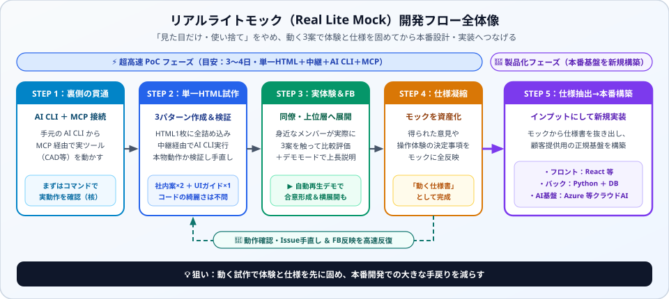

リアルライトモック（Real Lite Mock）わかる動的ガイド
いきなり本格的なフロント・バックエンド構築に入ると時間がかかり、かといって見た目だけの試作は使い捨てになります。 このガイドでは、「単一 HTML ＋ ローカル AI CLI ＋ MCP で3〜4日でリアルに動く3案を作り、体験を詰め込んだモックをそのまま本番化のインプットにする」進め方を、実際に触りながら 5 ステップで理解できます。
① 単一HTMLで実動作
裏の AI CLI＋MCP で実ツールまで動かす
② 3パターン並行試作
現場案×2＋AI UI定石×1を触り比べ
③ ▶ 自動再生デモ
ボタン1回で上長説明・社内横展開
④ 使い捨てず資産化
動く仕様書として AI で本番再構築

なぜ「モックを作ってから本番化」のほうが近道なのか？
たとえ話：
注文住宅を建てる前に、いきなり基礎工事（React・DB・クラウド環境）を始めると「やっぱりキッチンはこっち」と直すのが大変です。逆に紙の間取り図（見た目だけモック）では暮らし心地が分かりません。AI 時代は、3〜4 日で「実際に家電が動くモデルルーム」を 3 棟建てて住み心地を確かめ、確定したモデルルームを設計図として本物を建てるのが最短です。
💡 STEP 1 の要点
AI が高速にコードを書ける今だからこそ、「土台作りに時間を奪われてヒアリング機会を失う」のが最大のリスクです。最初はコードが泥臭くても、HTML 1 ファイルに全部詰めて 3〜4 日で実体験まで持っていきます。
3パターン並行試作 × ▶ デモモード（自動再生）を体験しよう
題材（架空の業務 PoC）：
裏側では ローカル AI CLI（GitHub Copilot CLI 等）＋ MCP 経由で CAD ソフトを操作し、3D パーツを生成できる状態まで完成済み。
次に UI を決めるとき、1 案に絞らず「現場案①」「現場案②」「AI UI ガイド（7 パターン）最適案」の 3 つの動く HTMLを並べて同僚に触り比べてもらいます。さらに「▶ デモモード自動再生」を入れれば、上長説明も 1 クリックで完了します。
⚙️ 裏側の実動作（AI CLI → MCP → CAD）
リアル連動// 待機中：左の画面から実行するか「▶ デモモード自動再生」を押してください
💡 STEP 2 の要点
1 案だけだと「これでいいと思います」で終わりがちですが、動く 3 案を並べることで「A の入力の速さと C の確認ステップを合体したい！」という具体的な本音が同僚から出てきます。また自動再生デモモードがあることで、上位レイヤーへの説明や社内展開のハードルが一気に下がります。
ローカル CLI 検証 → クラウド本番化（継ぎ足し NG の理由）
企業内開発のリアル：
社内でいきなり Azure などのクラウド AI を契約・申請・構築すると時間が止まります。まずは手元の AI CLI（GitHub Copilot CLI 等）で価値を証明し、体験と要件が固まった段階で、完成したリアルライトモックを AI へのインプットにして本番構成を一気に生成します。
⚠️ 本番移行の分かれ道：「使い捨てない」の正しい意味
❌ NG：モックのコードをそのまま継ぎ足す
- 単一 HTML の泥臭いコードに認証や API を無理やり後付けする
- 業界で「バイブコーディングの二日酔い（Vibe Hangover）」と呼ばれる破綻パターン
- セキュリティ穴や例外処理漏れが残り、保守できなくなる
✅ OK：モックを「動く仕様書」として AI に渡し再構築
- フィードバックを詰め込んだモックをそのまま AI へのインプットにする
- 画面遷移・入力項目・プロンプト・MCP 仕様を AI に正確に抽出させる
- React＋Python＋DB＋クラウド AI をゼロから清潔に生成し、自動テストを付ける
💡 STEP 3 の要点
覚えておく合言葉は「コードは使い捨ててよい。しかしモックに詰まった『体験と仕様』は絶対に捨てず、次の AI への最高インプットにする」です。
この手法は本当に有効？ 世の中の 6 つの裏付けと 3 つの落とし穴
調査の結論：
あなたが現場の肌感覚で辿り着いたリアルライトモック手法は、単なる自己流ではなく、スタンフォード大学の研究から 2025〜2026 年の最新 AI 開発論まで 6 つの実証済み理論と見事に一致しています。下のカードをクリックして確認できます。
🛡️ 企業で実践するときに気をつけたい「3 つの落とし穴」
① デモの罠（The Demo Trap）
動きがリアルすぎて、上長や顧客が「もう9割できている！来週出せるね？」と誤解してしまう。
✅ 対策：デモ時に「本番には認証・権限・監査・クラウド移行が別途必要」と必ず明示。
② 継ぎ足し改修の誘惑
「動いているし、このまま少し直して客先に出そう」と妥協し、保守不能・脆弱性の温床になる。
✅ 対策：単一HTMLは PoC 専用と線引きし、Phase 2 は仕様抽出から清潔に新規構築。
③ 社内データとセキュリティ境界
ローカル AI CLI や MCP 検証で、未承認の本番機密データをうっかり流してしまう。
✅ 対策：社内契約済の CLI を使い、PoC 段階はダミーデータ・検証用モデルで安全に実施。
💡 STEP 4 の要点
リアルライトモックは「現場の勘」と「学術・業界の王道理論」が完全に噛み合った手法です。上の 3 つのガードレールだけ押さえれば、企業内プロジェクトでも安心して横展開できます。
3〜4 日スプリント チェックリスト ＆ コピペ用 AI プロンプト
後から見返してすぐ動ける道具箱：
案件ごとに下のチェックリストを順に潰し、用途に合ったプロンプトを 1 クリックでコピーして AI（Copilot や Claude 等）に貼るだけで、リアルライトモック手法をそのまま再現できます。
✅ 進行チェックリスト（クリックしてチェックできます）
0 / 6 完了📋 そのまま AI に貼れるプロンプト雛形（3 種）
🎉 おつかれさまでした！
詳しい図解と文章リファレンスは real-lite-mock/README.md にまとめています。3 案目の「AI UI 定石」を選ぶときは、7. AI・UI設計ガイド とあわせて活用してください。